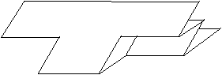
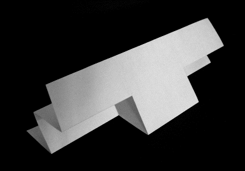
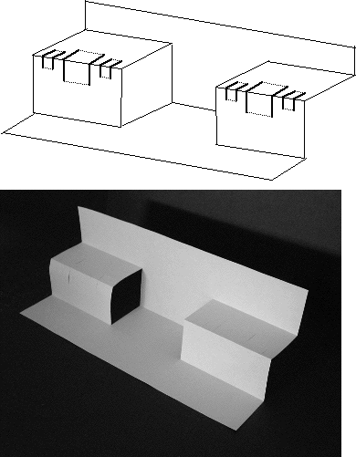

Without changing the large middle section, fold the two largest outside pieces in, the opposite of their current position.
|  |
|  |
| The two large pieces refolded so that they point in between the halves of the large sheet. |
Open up the large sheet and turn it as illustrated.
|  |
| The large sheet opened up with the two large pieces on the ends reverse folded. |
Return to A. The Cantor middle thirds set.